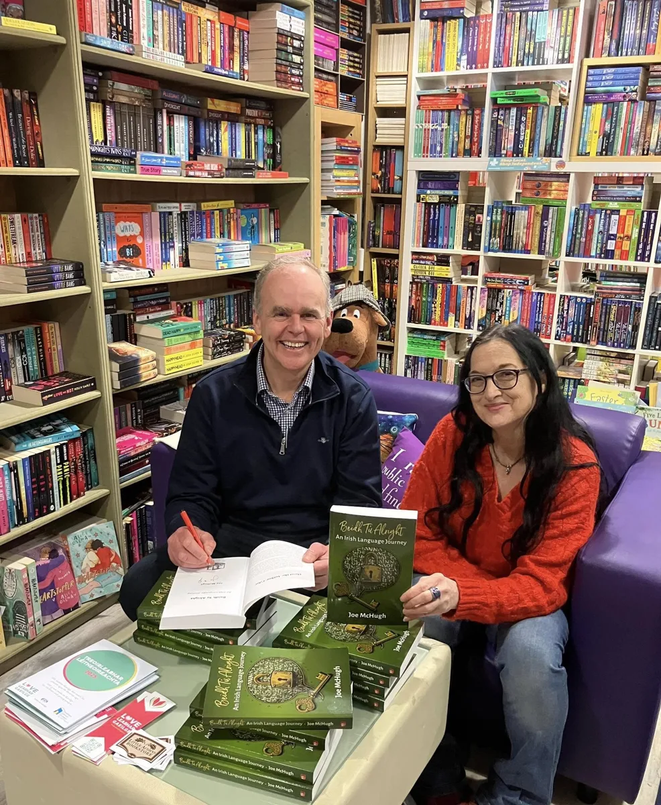
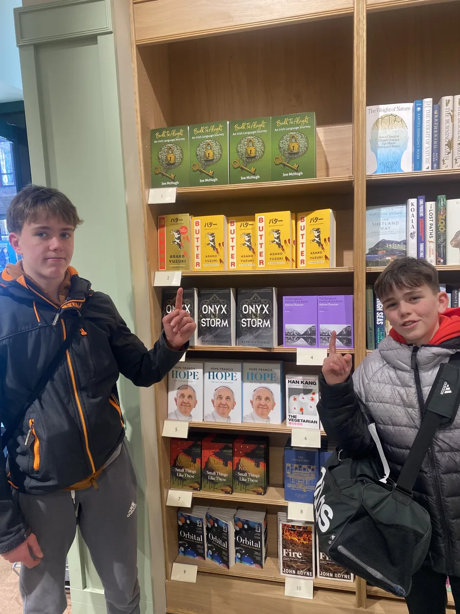
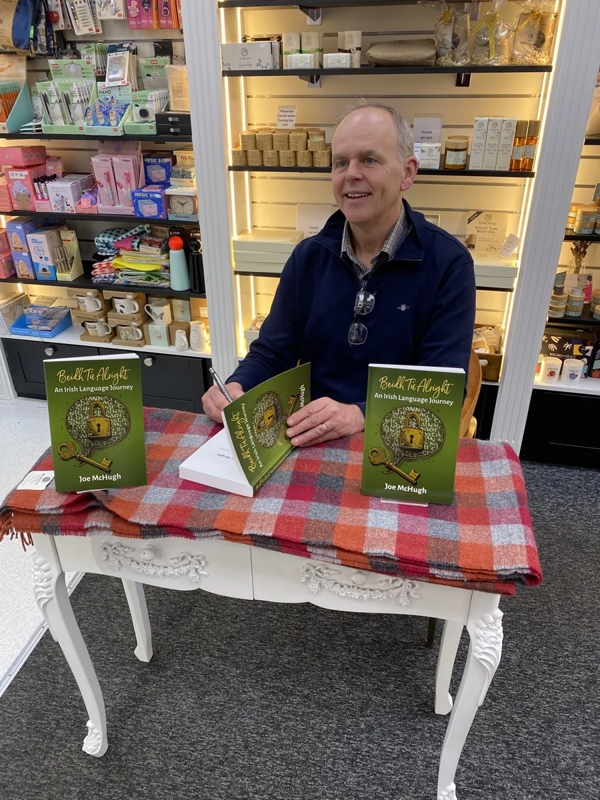
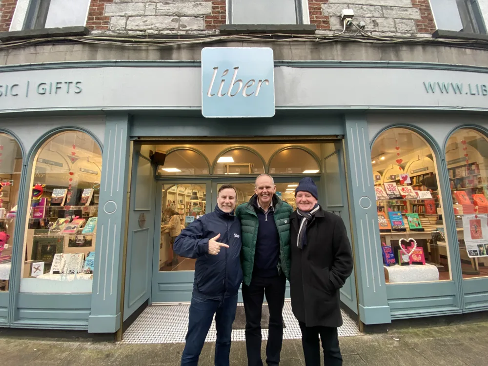
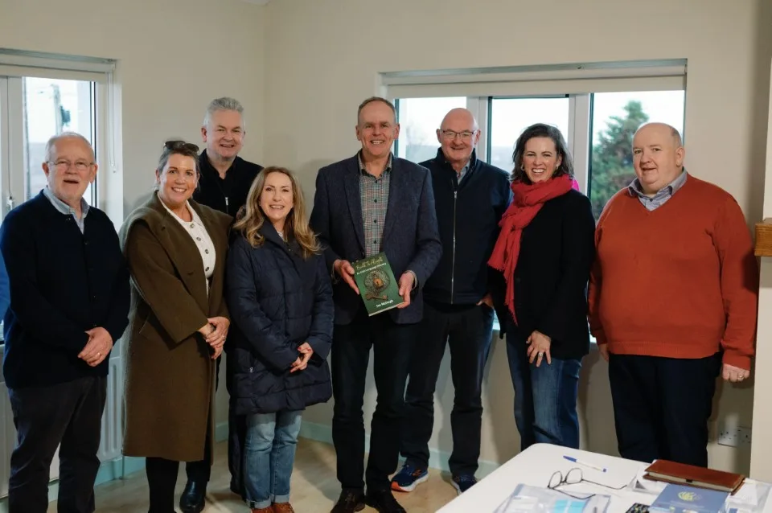
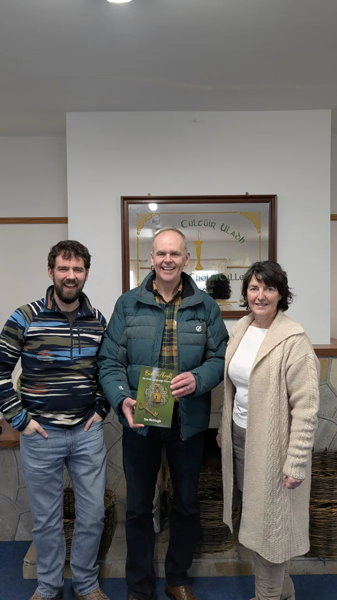
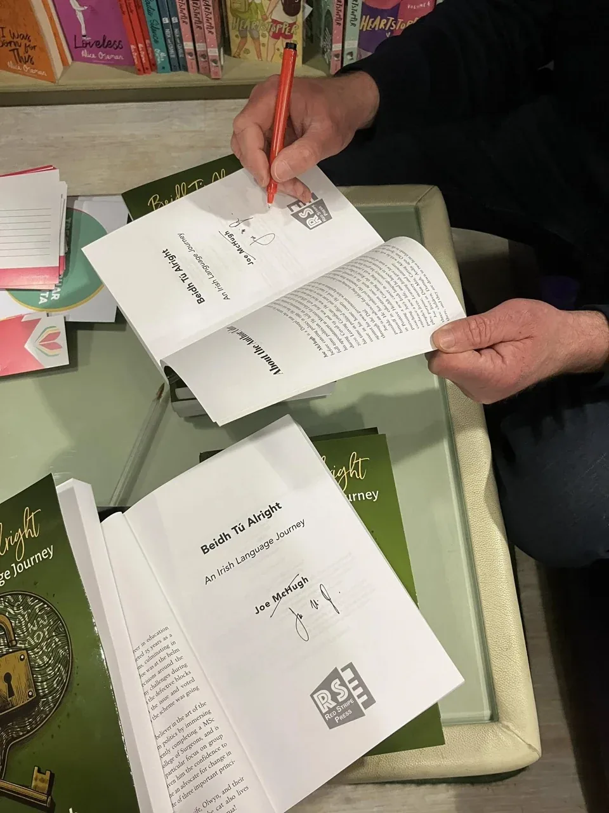

BEIDH TÚ
ALRIGHT
An Irish Language Journey

In 2014, Joe McHugh was appointed Minister of State with responsibility for the Irish language, with only a limited grasp of Irish himself.
Beidh Tú Alright tells the personal story that followed: returning to learning as an adult, making mistakes and discovering a deeper connection to language, people and place.
The story
behind the book
When Joe McHugh was appointed Minister of State with responsibility for the Gaeltacht and the Irish language in July 2014, the reaction from the Irish-speaking community was immediate.
Outside Government Buildings, protestors chanted:
“Aire gan teanga, Aire gan clue.”
A Minister without a language is a Minister without a clue.
Joe had been asked to promote a language he had only a limited grasp of himself. Rather than retreating from the challenge, he decided to learn.
What began as a very public challenge became a deeply personal journey.
More than learning a language
In Beidh Tú Alright, Joe shares the challenges of learning Irish as an adult: the mistakes, the encouragement and the unexpected discoveries along the way.
From uncovering the meaning behind place names to exploring the landscapes of Bear Island and Gleann Cholm Cille, his journey opened up new connections with the language, its history and the communities who speak it.
This is a personal account of learning and rediscovery, for anyone beginning their own Irish-language journey, returning after years away or simply drawn to the people, places and stories behind the language.
At its heart is a question many of us recognise:
what might happen if we gave ourselves another chance to learn?

A few pages from the book
Joe’s chosen extract
Space reserved for a passage from the book,
with its chapter title or page reference.
From the BOOK LAUNCH










A Signed Copy

Beidh Tú Alright
An Irish Language Journey
Signed paperback · €19.99 + postage
Written in English. No knowledge of Irish needed.
Dispatched within three working days.
Delivery & Returns
Delivery is available within Ireland and to international destinations offered at checkout. Postage is shown before payment.
You can cancel within 14 days of receiving your book, then have a further 14 days to return it. Return postage is your responsibility unless the book is faulty or incorrectly supplied.
Full delivery and returns information →